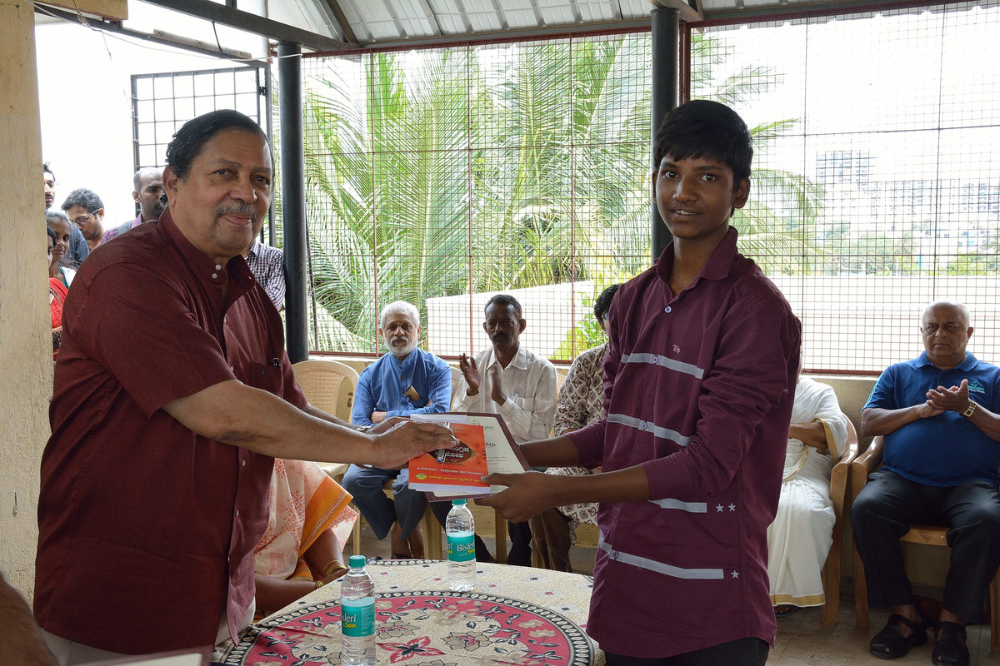

Our Story
It started with 125 books.
A small idea between two friends in 2001 has become twenty-five years of work across five government schools.
It all started with two friends who, as students back in 2001, wanted to bring much-needed change to local government schools by upgrading their educational infrastructure and teaching amenities. That marks the birth of Spandana.
The two decided to set up a library in one government school as Spandana's first activity — with no external monetary support. They collected books from like-minded individuals and set up the library with 125 books across all genres.
As of 2016, Spandana took on a new form — a registered NGO Trust. All donations made to Spandana are now eligible for exemption under 80G of the Income Tax Act.
Giving it forward
Spandana has expanded its services to needy and worthy young students stepping into undergraduate education, providing scholarships throughout their studies while teaching them the importance of giving back. We ask students to treat their scholarships as interest-free education loans — and to give back to society after they graduate.

Our team
The trustees.
Prashanth Bandagadde
Founder and Managing Trustee
Krishna Bhargava
Trustee and Treasurer
Shashank Aswathanarayana
Trustee
Madhusudhan Aithal
Trustee
Registration
Transparent and accountable.
Spandana is a registered charitable trust. Reg. No. CIT(E)BLR/80G/R-155/AARTS4646M/ITO(e)-3/Vol 2016-17. Donations are eligible for 80G exemption under the Income Tax Act.